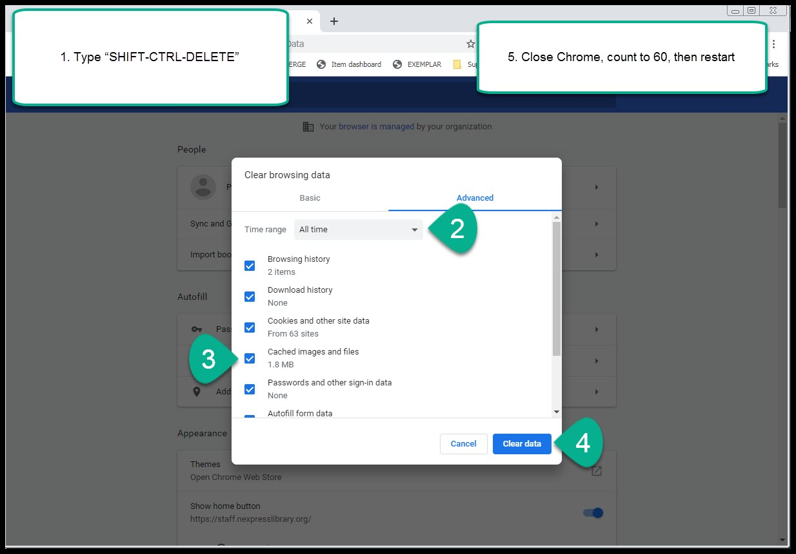
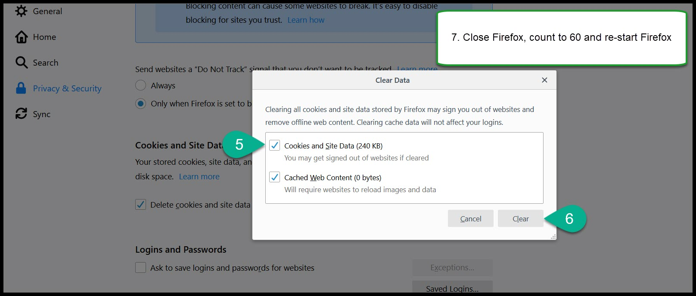

Clearing the cache on your browser
Firefox - Method #1
To clear the cache in Firefox:
- Start Firefox and type “SHIFT-CTRL-DELETE” to bring up the “Clear All History” window
- Make sure the “Time range to clear” drop down says “Everything”
- Make sure the “Cache” checkbox is checked
- Click on the “Clear now” button
- Click on the X to close Firefox
- Wait 60 seconds then re-start Firefox

Chrome - Method #1
To clear the cache in Chrome:
- Start Chrome and type “SHIFT-CTRL-DELETE” to bring up the “Clear browsing data” window
- Make sure the “Time range” drop down says “all time”
- Make sure the “Cached images and files” checkbox is checked
- Click on the “Clear data” button
- Click on the X to close Chrome
- Wait 60 seconds then re-start Chrome

Firefox - Method #2
An alternative way of clearing the cache in Firefox:
- Start Firefox
- Click on the options menu icon on the upper right hand side of the browser
- Click on “Options”
- Click on “Privacy & Security” on the left hand side of the screen
- Scroll down to “Cookies and Site Data”
- Click on “Clear data” and make sure “Cached Web Content” is checked
- Click on “Clear”
- Click on the X to close Firefox
- Wait 60 seconds then re-start Firefox

Chrome - Method #2
An alternative way of clearing the cache in Chrome:
- Start Chrome
- Click on the “Customize and control Google Chrome” icon
- Hover on “More tools”
- Click on “Clear browsing data”
- Make sure the “Time range” drop down says “All time”
- Make sure the “Cached images and files” checkbox is checked
- Click on the “Clear browsing data”
- Click on the X to close Chrome
- Wait 60 seconds then re-start Chrome
Firefox - Method #3
If you follow this method, you should never need to clear your Firefox cache again
- Start Firefox
- Click on the options menu icon on the upper right hand side of the browser #. Click on “Options”
- Click on “Privacy & Security” on the left hand side of the screen
- Scroll down to “History”
- Click on “Settings”
- In the section marked “History” make sure “Cache” is checked
- Click “OK”
- Click on the X to close Firefox
- Wait 60 seconds then re-start Firefox
This method tells Firefox to clear its own cache every time you close Firefox. As far as overall privacy and confidentiality goes, checking all of the boxes under “Settings for Clearing History” is the best practice. It prevents anyone from accessing any data your web browser stores. For most users, however, the convenience of having Firefox store your passwords and browsing preferences outweighs most user’s privacy concerns.
Chrome - Method #3
The built-in method for Chrome to automatically clear cached data is not effective. However, there is a Chrome extension called “Click and Clean” that will allow you to tell Chrome to delete the cache (as well as other sensitive data) every time you close Chrome.
Click and Clean can be downloaded at https://chrome.google.com/webstore/detail/clickclean/ghgabhipcejejjmhhchfonmamedcbeod. Once it’s installed find the “Options” button Then click the checkbox next to “Delete private data when Chrome closes”
Frequently asked questions
Q: What is the browser cache
Your browser’s cache is a temporary storage space on your local computer where data from websites is stored. The stored data can include:
- images
- web pages and HTML
- CSS
- JavaScript
- other data associated with web pages you’ve visited
Your browser’s cache speeds up browsing the internet by storing files on your local computer so that your computer doesn’t have to download the same files again and again and again when surfing the web. By storing data that doesn’t change often on your local computer, when you load pages from the same site that have the same pictures, color schemes, and overall structure, your computer only has to download new content and it can recycle the content that remains static from the cache on your local computer.
Q: So why is do I have to clear the cache? / Why is this necessary?
The problem arises because Koha relies heavily on HTML, CSS, JavaScript, and jQuery that can change drastically during an upgrade. When we move from 1 version of Koha to another during an upgrade, if any of the old version’s HTML, CSS, JavaScript, or jQuery remains cached on your local computer, it can cause problems when your computer tries to load pages from the new version of Koha. If the JavaScript has changed, and your web browser tries to execute a cached function that no longer works, Koha won’t work correctly.
This is why you need to clear your browser’s cache after every Koha upgrade.